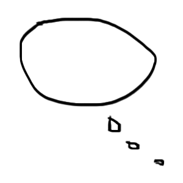
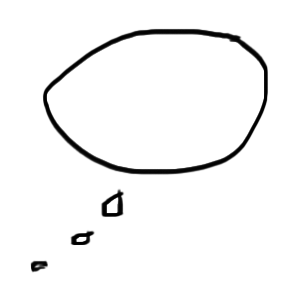

This is Alice. She eats everything sweet.

There’s no better time to eat all the candy you want than on Halloween [Alice seen chugging candy as her eyes starts to close]

She takes a stroll in the nearby woods to wear off the effects of the sugar rush

Out of nowhere, she spots a peculiar white rabbit. What should she do?
tchht


Help Him

Follow Him
Alice: “Wait! I want to help you!”

WR: “Gniod uoy era tahw, pots!”

WR: “Em eerf tonnac ouy, Nueeq eht yb desruc neeb evah I !”

Alice: “Don’t worry Mr Rabbit, I’ll save you!” Alice couldn’t make out what he was trying to tell her.


WR: “Ooooooooon!”


[Alice enters the clock][goto #18]

Alice decides to follow the white rabbit quietly as he passed.